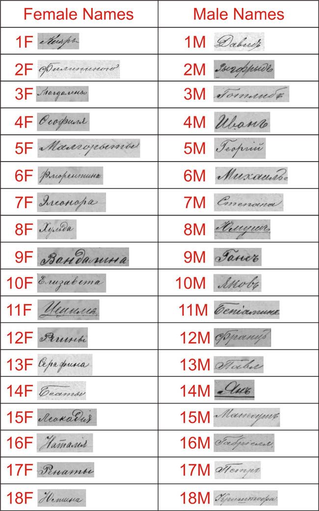

Examples of common German given names with their translation into the Latin alphabet are abundant in Russian records, although at times they may be translated into the Polish representation. Some of the less common German given names may present a small challenge to interpret since this skill requires the ability to read Cyrillic and familiarity with German names while not having many examples of where these names are used elsewhere. To complicate this dilemma the names written in Cyrillic may be written in either their Russian form, or phonetically transcribed according to either the German or Polish version of the name. Since there seems to be no standard spelling of these “foreign” names in Russian, the transcriber often used his own convention for spelling given names and surnames of German origin. This quiz provides examples of given names from the Lublin records written by several different hands. Some are relatively common names but most are less common among the Germans of the 19th century in Russian Poland and Volhynia. A link to the answer key can found below the quiz.
(Answer key below the image.)

Answers are on the next page.